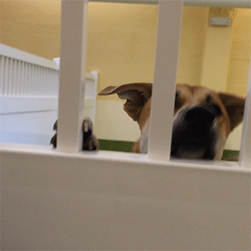
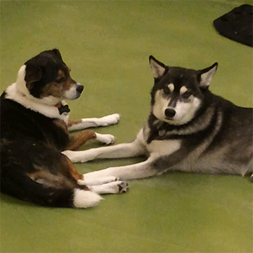

ABOUT
Welcome to The Dogs of Harrison, this website is also an expansion of one of the chapters in my book Who is Harrison? A Book About a Block. On this website you can get to know the dogs that visit Harrison between Mariposa and 18th Street, San Francisco. Most of the dogs you will see are frequent visitors of the block, because they go to a dog daycare on the block called Mr. Muggles’. I actually worked at Mr. Muggles’ for about a year, so I know each of these dogs personally and have learned all about each of their personalities first hand.
I hope you enjoy getting to know each of these funny, friendly and cute dogs as much as I did!


